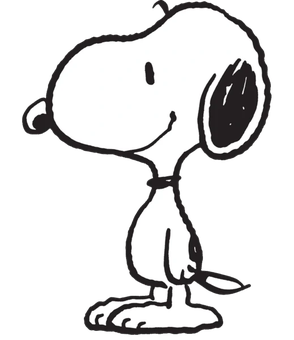

THE COMPLETE FILM · 00–24s
01 · THROUGH THE INKFULL FILM
Checking video export…
Download MP4 ↗
THE CURRENT CUT
One continuous film.
Six shots to shape.
Flat ink, a flight around Earth, and a journey through SNN. Play the full cut or work on one shot below.
Each shot loops on its own and scrubs through the same film. Use the shot number and timestamp when giving feedback.
SCENE EDITOR
Orbit edits update the film previews. Camera track stays fixed.
Drag to orbit Right drag / Shift-drag to pan Scroll to zoom Arrow keys pan
Path and speed plot begin at 7.1s, after the opening lens transition. Dots mark 0.5s.
The original drawing and supplied reference, kept here for comparison.

REFERENCE